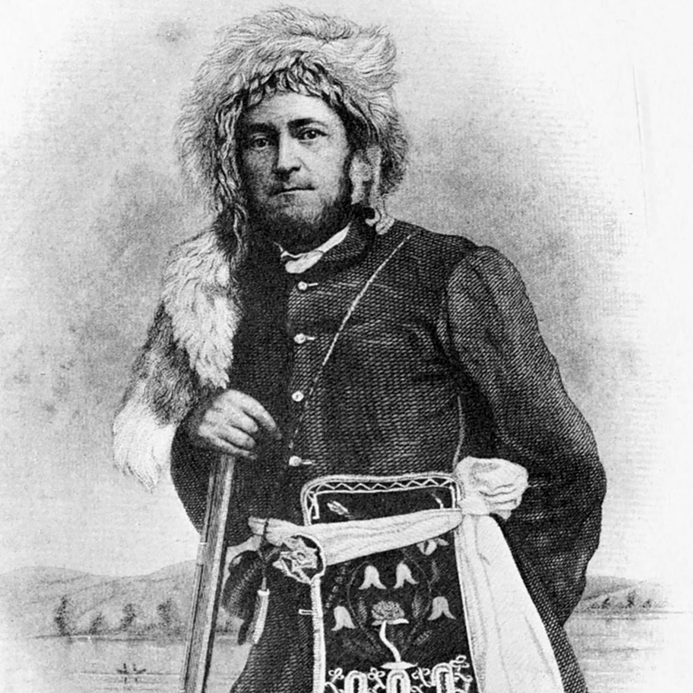

Joseph Meek
Born in Washington, Virginia. Buried in Washington, Oregon

Meek posing for a picture as a fur trapper as a young man.
- 1810 - Born in Washington county, Virginia
- 1828 - Joined the Rocky Mountain Fur Company and roamed the Rocky Mountains with fur traders.
- 1829 - While on a hunting trip along the Yellowstone river, he was lost and traveled into what is today Yellowstone National Park.
- 1838 - Married a woman given to him by native americans, he called her "Virginia".
- 1840 - As the fur trade decayed, he joined fellow trappers heading to Oregon and was the first to make it as far west as the mission on the Oregon Trail.
- 1841 - Settled in northwest of Oregon city and entered into the political life of the area.
- 1843 - Called to form a provisional government and when it was formed, he was appointed Sherif.
- 1847 - Traveled to Washington D.C. in the aftermath of the Whitman Massacre and while there, he argued for making the Oregon Country a federal territory.
- 1848 - Was made Territorial Federal Marshal and served for 5 years.
- 1850 - Led and organized the Oregon Volunteers in the Yakima Indian War and was promoted to the rank of major for his service.
- 1875 - Died at the age of 65 at his home on the land he settled on the Tualatin Plains, northwest of Oregon and was buried at the cemetery of the Tualatin Plains in Washington County, Oregon
Here is a timeline of Joseph Meek's life:
"I want to live long enough to see Oregon securely American... so I can say that I was born in Washington County, United States, and died in Washington County, United States."
-- Joseph Meek